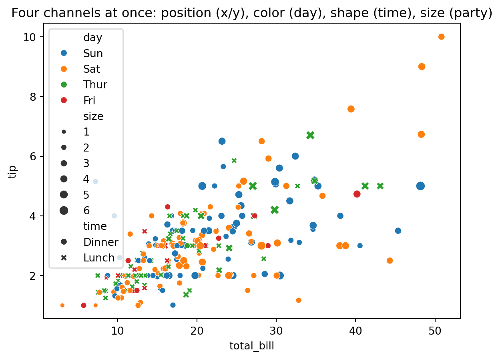

How data becomes a picture. This chapter covers the systematic mapping of variables to visual channels — the grammar of graphics — together with the perceptual principles that determine whether a chart actually communicates.
📖 Background & Motivation
Every chart is a set of choices about how to map data variables onto visual properties: position, length, angle, color, size, shape. The “grammar of graphics” makes these choices explicit and composable, so that instead of memorizing chart types you can reason about encodings. This is the conceptual engine behind seaborn and Altair, and understanding it lets you build the right chart for a question rather than the nearest template.
But a correct encoding is not automatically an effective one. Perceptual research — from Cleveland and McGill’s experiments on how accurately people read different channels, to Gestalt principles of grouping, to preattentive features — tells us that some encodings are read quickly and accurately while others mislead. A graduate-level visualizer treats these findings as design constraints, not decoration.
🔎 Learning Objectives
Decompose a chart into data, marks, and encoding channels.
Rank visual channels by perceptual accuracy (Cleveland–McGill) and apply that ranking.
Use Gestalt principles and preattentive features to guide grouping and emphasis.
Build multi-encoding charts in seaborn and Altair and critique their readability.
📚 Readings & Resources
Munzner, Visualization Analysis & Design, Ch. 5 (Marks and Channels).
Wilke, Fundamentals of Data Visualization, Ch. 5–6.
Single 2-hour block. Theory-leaning week — Block 1 runs a bit longer.
Block 1 — Concepts & Theory (~40 min). Marks and channels (10) · perceptual accuracy: why position beats length beats angle beats color (12) · Gestalt and preattentive features (12) · redesigning a misleading chart (6).
Block 2 — Guided Demonstration (~25 min). The same data, four encodings (12) · layering and faceting in Altair (13).
☕ Break (~10 min).
Block 3 — Hands-On (~35 min). Build a multi-encoding chart, choosing channels by accuracy (25) · two competing versions side-by-side in Streamlit (10).
Block 4 — Wrap-Up (~10 min). Share competing designs; vote on the most readable (6) · preview homework (4).
💻 Live Code
Seaborn multi-encoding
import seaborn as snsimport plotly.express as pximport matplotlib.pyplot as plttips = px.data.tips()sns.scatterplot( data=tips, x="total_bill", y="tip", hue="day", style="time", size="size",)plt.title("Four channels at once: position (x/y), color (day), shape (time), size (party)")plt.show()

How many channels can you read at once before the chart becomes cluttered? Note how quickly the eye picks up position compared to size or shape.
Altair builds an interactive chart specification. The object is created here; in a notebook or rendered Altair output it displays as an interactive chart.